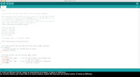

INFLATABLES
19 October 2018
Description of the process:
- Conect the Arduino to the computer, in order to program it
- Program de Arduino in the computer

- Conect the Arduino to a circuit woth LED light with aligator clips to prove it is working.
- Place your Attiny in a bread board and then conect it to the Arduino using the cables in the pins
- Select the right options for programing the Attiny. Then, you have to look for a tone for your card and paste it in the software to program it in the Attiny.


- Design your card usin Adobe Illustrator
- Do the sketch of the circuit in the base of the card.
- Cover the circuit with Coppertape
- Place the LED lights and the speaker. Then solder the conections.
- Solder the Speaker, LED lights and battery to the Attiny, in the pins we have already set for each element in the programing process.
- Cover the circuit and the conections with tape, in order to make it saver
- Make a pocket for the batteries and a botton.
- To prepare the visible part of the card, lets cut the elements using Shilouette.
- I will make use of the option in which you can print your design in a paper shit using some marks the machine will recognice afterwards.
- Make a system that will make the contact with the batteries.
- Leave a hole in the speaker so the sound can go out with no difficulties. Then we will cover it with the picture of the radio poping up.
- Place all the elements in the card.
- Try it out!